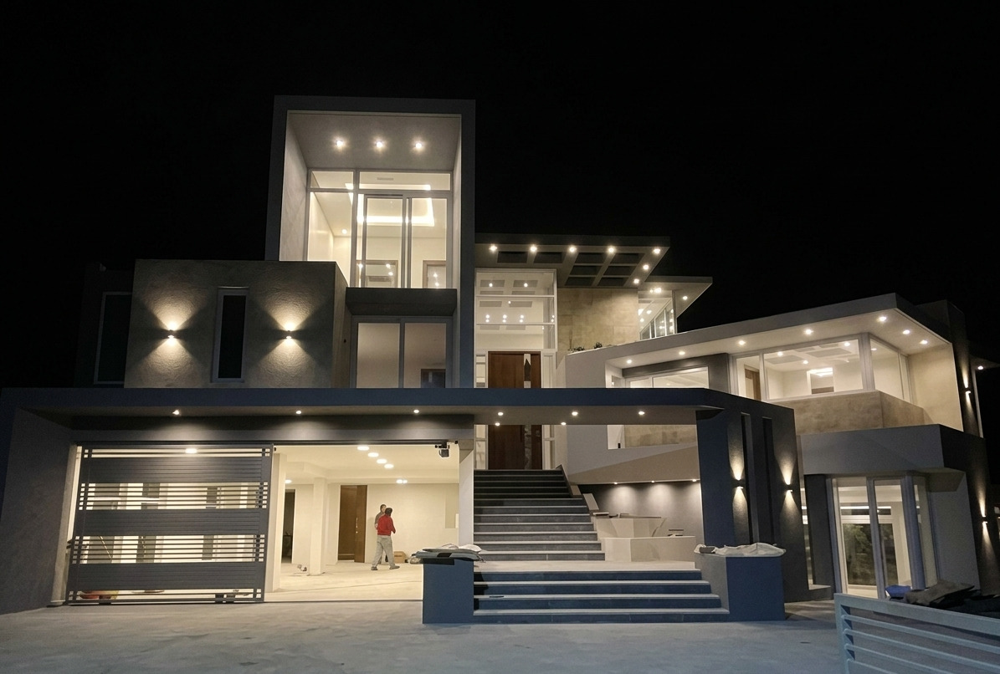

Obras que Definen
el Horizonte
Desde la concepción estructural hasta el último detalle de iluminación, transformamos espacios en legados arquitectónicos.
Proyectos Destacados
Una selección de nuestras intervenciones más emblemáticas.

Casa Country Campos del Virrey
Vivienda unifamiliar y quincho multiespacio de 340 m². Ladrillo visto, iluminación indirecta y espacios de diseño singular en entorno arbolado.
construction 2021 · 340 m²

Residencia Alto de Achumani
Iluminación integral de 787 m² y 3 pisos con vistas panorámicas. Piscina, sauna, gym, salón de entretenimiento, bar y taller de motos.
construction 2023 · 787 m²

Iluminación Casona Country Golf
Hall-museo con cúpula, colección de antigüedades, escalera metálica con vidrio, piscina interior y jardín con luminarias de diseño propio.
construction 2017 · 540 m²

Dos Viviendas en un Mismo Lote
Refuncionalización y ampliación de dos unidades habitacionales. Estética minimalista, optimización de cada m² y rentabilidad como objetivo.
construction 2020 · 161 m²
Iluminación de Interiores
La luz no solo ilumina, esculpe el espacio. Integramos sistemas inteligentes que adaptan la calidez y el flujo lumínico según el momento del día y el propósito de cada estancia.
-
wb_sunny
Luz Indirecta
Sistemas que no molestan a la vista y ofrecen una iluminacion homogenea.
-
settings_input_component
Diseño y fabricacion de luminarias a medida
Diseñamos las luminarias segun las necesidades, espacios y caracteristicas del proyecto.
-
palette
Temperatura de Color
Diseño lumínico personalizado para cada ambiente.


Iluminación de Exteriores
Realzamos la arquitectura nocturna, creando recorridos seguros y visualmente impactantes en fachadas, jardines y áreas sociales exteriores.
Fachadas Monumentales
Proyección & Acento

Paisajismo Lumínico
Naturaleza Viva

Terrazas & Piscinas
Atmósfera Social
Precisión con Metodología BIM
En Grupo B's, todos nuestros proyectos son ejecutados bajo estándares BIM (Building Information Modeling). Esta tecnología nos permite crear gemelos digitales que garantizan precisión milimétrica, reducción drástica de costos imprevistos y el cumplimiento riguroso de los plazos de entrega.

Convertimos tu visión
en una obra que perdura
Contamos con más de 25 años de experiencia transformando proyectos en realidades. Desde el primer boceto hasta la entrega de llaves, acompañamos cada etapa con precisión técnica y compromiso real.